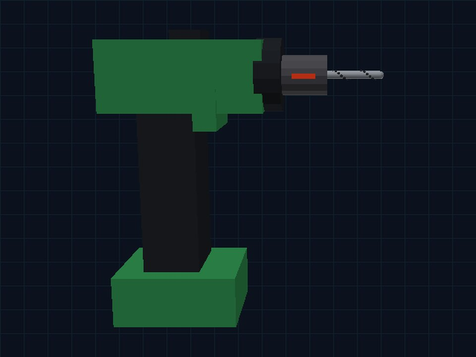

01 / GIVE IT FORM
Start with the object.
A body. A trigger. A working bit. Geometry makes the tool visible and gives its parts a place in the scene.
// MECHANICA · EXECUTABLE WORLDS
Beyond appearance. Into behavior.
Build tool environments that respond to interaction
and give agents a world to learn from.

TRIGGER INPUTMOTOR RESPONSEBIT MOTION01 / GIVE IT FORM
A body. A trigger. A working bit. Geometry makes the tool visible and gives its parts a place in the scene.
02 / MAKE IT OPERABLE
Press the trigger. Select a gear. Change direction. Articulated components make interaction concrete.
03 / EXECUTE THE RESPONSE
Motor response, braking and clutch behavior determine what happens after each command. The tool now has consequences an agent can observe.
TAKE CONTROL ↗Start the simulation to operate the tool.
Solid cyan is the motor shaft inside the tool. Dashed pink is the working bit at the tip. If the clutch disengages, the motor can turn while the bit stops. Negative speed means reverse rotation.
// THE DIFFERENCE IS BEHAVIOR
We combine articulated geometry with executable tool behavior. Your commands change the simulated state, and that state drives the motion and measurements you see.
Try the same tool under different conditions. The response comes from the simulator, not a preselected animation. Offline previews are explicitly labelled as recordings.
01 / PRESS AND RELEASE
Motor response and braking determine how rotation changes over time. The scene follows that simulated response.
Research simulations that make tool behavior observable and testable. Commercial hardware calibration is a separate step.
// FROM INTERACTION TO ACTION
RECORDED AGENT EXPERIMENT
An Agent writes a predictive tool model from interaction evidence. Our planner uses that model to choose movements and complete a drilling task.
✓ HOLE COMPLETED · TOOL STOPPED
Selected successful simulation run. Replayed from the executed commands. The Agent supplies the predictive code; our planner selects the actions.
// ONE POSSIBLE APPLICATION
An executable environment can return evidence, not just images. In a saved pilot, Agent chose short experiments and revised its forecasts after observing the responses.
This is a recorded example from an earlier tool fixture. The current workbench does not train Agent. No live model calls are made.
Solid cyan shows the simulator measurement. Dashed pink shows Agent’s prediction of the same bit speed.